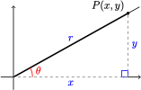

Coordinate Definitions of the Trigonometric Ratios
- \(\cos \theta = \dfrac{x}{r}\)
- \(\sin \theta = \dfrac{y}{r}\)
- \(\tan \theta = \dfrac{y}{x}\)

The town of Avery lies 48 miles due east of Baker, and Clio is 34 miles from Baker, in the direction \(35\degree\) west of north. How far is it from Avery to Clio?
We know how to solve right triangles using the trigonometric ratios. But the triangle formed by the three towns is not a right triangle, because it includes an obtuse angle of \(125\degree\) at \(B\text{,}\) as shown in the figure.

A triangle that is not a right triangle is called an oblique triangle. In this chapter we learn how to solve oblique triangles using the laws of sines and cosines. But first we must be able to find the sine, cosine, and tangent ratios for obtuse angles.
To extend our definition of the trigonometric ratios to obtuse angles, we use a Cartesian coordinate system. We put an angle \(\theta\) in standard position as follows:
The length of the side adjacent to \(\theta\) is the \(x\)-coordinate of point \(P\text{,}\) and the length of the side opposite is the \(y\)-coordinate of \(P\text{.}\) The length of the hypotenuse is the distance from the origin to \(P\text{,}\) which we call \(r\text{.}\) With this notation, our definitions of the trigonometric ratios are as follows.
It doesn't matter which point \(P\) on the terminal side we use to calculate the trig ratios. If we choose some other point, say \(P^{\prime}\text{,}\) with coordinates \((x^{\prime}, y^{\prime})\text{,}\) as shown at right, we will get the same values for the sine, cosine and tangent of \(\theta\text{.}\) The new triangle formed is similar to the first one, so the ratios of the sides of the new triangle are equal to the corresponding ratios in the first triangle.
Find the values of cos \(\theta\text{,}\) sin \(\theta\text{,}\) and tan \(\theta\) if the point \((12, 5)\) is on the terminal side of \(\theta\text{.}\)
For the point \(P(12, 5)\text{,}\) we have \(x=12\) and \(y=5\text{.}\) We use the distance formula to find \(r\text{.}\) \begin{align*} r \amp = \sqrt{(2-0)^2 + (5-0)^2} \\ \amp = \sqrt{25+144} = \sqrt{169} = 13\\ \end{align*} The trig ratios are
\begin{align*} \cos \theta \amp = \dfrac{x}{r} = \dfrac{12}{13} \\ \sin \theta \amp = \dfrac{y}{r} = \dfrac{5}{13} \\ \tan \theta \amp = \dfrac{y}{x} = \dfrac{5}{12} \\ \end{align*}
In the previous example, note that we get the same results by using the triangle definitions of the trig ratios. We create a right triangle by dropping a vertical line from \(P\) to the \(x\)-axis, as shown in the figure. The legs of the right triangle have lengths 12 and 5, and the hypotenuse has length 13.
An obtuse angle has measure between \(90\degree\) and \(180\degree\text{.}\) In this section we will define the trigonometric ratios of an obtuse angle as follows.
Our new definitions for the trig ratios work just as well for obtuse angles, even though \(\theta\) is not technically “inside” a triangle, because we use the coordinates of \(P\) instead of the sides of a triangle to compute the ratios.
Notice first of all that because \(x\)-coordinates are negative in the second quadrant, the cosine and tangent ratios are both negative for obtuse angles. For example, in the figure below the point \((-4, 3)\) lies on the terminal side of the angle \(\theta\text{.}\) We see that
so
\begin{align*} \cos \theta \amp = \dfrac{x}{r} = \dfrac{-4}{5} \\ \sin \theta \amp = \dfrac{y}{r} = \dfrac{3}{5} \\ \tan \theta \amp = \dfrac{y}{x} = \dfrac{3}{-4} = \dfrac{-3}{4} \\ \end{align*}
Find the values of cos \(\theta\) and tan \(\theta\) if \(\theta\) is an obtuse angle with \(\sin \theta = \dfrac{1}{3}\text{.}\)
Because \(\theta\) is obtuse, the terminal side of the angle lies in the second quadrant, as shown in the figure below. Because \(\sin \theta = \dfrac{1}{3}\text{,}\) we know that \(\dfrac{y}{r} = \dfrac{1}{3}\text{,}\) so we can choose a point \(P\) with \(y=1\) and \(r=3\text{.}\) To find cos \(\theta\) and tan \(\theta\) we need to know the value of \(x\text{.}\) From the Pythagorean Theorem,
\begin{align*} x^2 + 1^2 \amp = 3^2 \\ x^2 \amp = 3^2 - 1^2 = 8\\ x \amp = -\sqrt{8} \\ \end{align*} Remember that \(x\) is negative in the second quadrant! Thus
In the examples above, we used a point on the terminal side to find exact values for the trigonometric ratios of obtuse angles. Scientific and graphing calculators are programmed with approximations for these trig ratios.
Find the sine and cosine of \(130\degree\text{.}\) Compare to the sine and cosine of \(50\degree\text{.}\)
Using a calculator and rounding the values to four places, we find \begin{align*} \sin 130\degree \amp = 0.7660 ~~~~~ \text{and}~~~~~ \cos 130\degree = -0.6428\\ \sin 50\degree \amp = 0.7660 ~~~~~ \text{and}~~~~~~~ \cos 50\degree = 0.6428\\ \end{align*}
We see that \(\sin 130\degree = \sin 50\degree\) and \(\cos 130\degree = -\cos 50\degree\text{.}\)
This result should not be surprising when we look at both angles in standard position, as shown at right. The angles \(50\degree\) and \(130\degree\) are supplementary. The right triangles formed by choosing the points \((x,y)\) and \((-x,y)\) on their terminal sides are congruent triangles.
Consequently, the trigonometric ratios for \(50\degree\) and for \(130\degree\) are equal, except that the cosine of \(130\degree\) is negative.
Use your calculator to fill in the table. Round to four decimal places.
| \(\theta\) | \(~~~~\cos \theta~~~~\) | \(~~~~\sin \theta~~~~\) | \(180\degree - \theta\) | \(\cos (180\degree - \theta)\) | \(\sin (180\degree - \theta)\) |
| \(10 \degree\) | \(~\) | \(~\) | \(~\) | \(~\) | \(~\) |
| \(20 \degree\) | \(~\) | \(~\) | \(~\) | \(~\) | \(~\) |
| \(30 \degree\) | \(~\) | \(~\) | \(~\) | \(~\) | \(~\) |
| \(40 \degree\) | \(~\) | \(~\) | \(~\) | \(~\) | \(~\) |
| \(50 \degree\) | \(~\) | \(~\) | \(~\) | \(~\) | \(~\) |
| \(60 \degree\) | \(~\) | \(~\) | \(~\) | \(~\) | \(~\) |
| \(70 \degree\) | \(~\) | \(~\) | \(~\) | \(~\) | \(~\) |
| \(80 \degree\) | \(~\) | \(~\) | \(~\) | \(~\) | \(~\) |
The examples above illustrate the following equations. These three equations are called identities, which means that they are true for all values of the variable \(\theta\text{.}\)
Because of these relationships, there are always two (supplementary) angles between \(0 \degree\) and \(180 \degree\) that have the same sine. Your calculator will only tell you one of them, so you have to be able to find the other one on your own! Fortunately, this is not difficult.
Find two different angles \(\theta\text{,}\) rounded to the nearest \(0.1 \degree\text{,}\) that satisfy \(\sin \theta = 0.25\text{.}\)
To find an angle with \(\sin \theta = 0.25\text{,}\) we calculate \(\theta = \sin^{-1}(0.25)\text{.}\) With the calculator in degree mode, we press
to find that one angle is \(\theta \approx 14.5 \degree\text{.}\) We draw this acute angle in standard position in the first quadrant, and sketch in a right triangle as shown below. There must also be an obtuse angle whose sine is \(0.25\text{.}\) To see the second angle, we draw a congruent triangle in the second quadrant as shown.
The supplement of \(14.5 \degree\text{,}\) namely \(\theta = 180\degree - 14.5 \degree = 165.5\degree\text{,}\) is the obtuse angle we need. Notice that \(\dfrac{y}{r} = 0.25\) for both triangles, so \(\sin \theta = 0.25\) for both angles.
Find two different angles \(\theta\) that satisfy \(\sin \theta = 0.5\text{.}\)
Because there are two angles with the same sine, it is easier to find an obtuse angle if we know its cosine instead of its sine.
Find the angle shown at right.
Using \(x=-3\) and \(y=4\text{,}\) we find
so \(\cos \theta = \dfrac{x}{r} = \dfrac{-3}{5}\text{,}\) and \(\theta = \cos^{-1}(\dfrac{-3}{5}).\) We can enter
to see that \(\theta \approx 126.9 \degree\text{.}\)
In the previous example, you might notice that \(\tan \theta = \dfrac{-4}{3}\) and try to find by calculating \(\tan^{-1}(\dfrac{-4}{3})\text{.}\) However, if we press
the calculator returns an angle of \(\theta \approx -53.1 \degree\text{.}\) It is true that \(\tan (-53.1 \degree) = \dfrac{-4}{3}\text{,}\) but this is not the obtuse angle we want.
We also know that \(\sin \theta = \dfrac{4}{5}\text{,}\) and if we press
we get \(\theta \approx 53.1 \degree\text{.}\) This is the acute angle whose terminal side passes through the point \((3,4)\text{,}\) as shown in the figure at right. The angle we want is its supplement, \(\theta \approx 180\degree - 53.1\degree = 126.9\degree\text{.}\)
In Chapter 2 we learned that the angles \(30\degree, 45\degree\) and \(60\degree\) are useful because we can find exact values for their trigonometric ratios. The same is true for the supplements of these angles in the second quadrant, shown at right.
Find exact values for the trigonometric ratios of \(135 \degree\text{.}\)
We sketch an angle of \(\theta = 135\degree\) in standard position, as shown below. The terminal side is in the second quadrant and makes an acute angle of \(45\degree\) with the negative \(x\)-axis, and passes through the point \((-1,1)\text{.}\) Thus, \(~r=\sqrt{(-1)^2 +1^2} = \sqrt{2}~\text{,}\) and we calculate
\begin{align*} \cos 135\degree \amp = \dfrac{x}{r} = \dfrac{-1}{\sqrt{2}} \\ \sin 135\degree \amp = \dfrac{y}{r} = \dfrac{1}{\sqrt{2}}\\ \tan 135\degree \amp = \dfrac{y}{x} = \dfrac{1}{-1} = -1\\ \end{align*}
Find exact values for the trigonometric ratios of \(120\degree\) and \(150\degree\text{.}\)
We can also find the trig ratios for the quadrantal angles. These are the angles, including \(0\degree\text{,}\) \(0\degree\) and \(180\degree\text{,}\) whose terminal sides lie on one of the axes.
Find exact values for the trigonometric ratios of \(90\degree\text{.}\)
The terminal side of a \(90\degree\) angle in standard position is the positive \(y\)-axis. If we take the point \(P(0,1)\) on the terminal side as shown at right, then \(x=0\) and \(y=1\text{.}\) Although we don't have a triangle, we can still calculate a value for \(r\text{,}\) the distance from the origin to \(P\text{.}\)
Our coordinate definitions for the trig ratios give us
so \(\cos 90\degree = 0\) and \(\sin 90\degree = 1\text{.}\) Also, \(\tan 90\degree = \dfrac{y}{x} = \dfrac{1}{0}\text{,}\) so \(\tan 90\degree\) is undefined.
Find exact values for the trigonometric ratios of \(180\degree\text{.}\)
The figure below shows part of the map for a new housing development, Pacific Shores. You are interested in the corner lot, number 86, and you would like to know the area of the lot in square feet. The sales representative for Pacific Shores provides you with the dimensions of the lot, but you don't know a formula for the area of an irregularly shaped quadrilateral.

It occurs to you that you can divide the quadrilateral into two triangles, and find the area of each. Now, you know a formula for the area of a triangle in terms of its base and height, namely,
but unfortunately, you don't know the height of either triangle.
However, you can easily measure the angles at the corners of the lot using the plot map and a protractor. You can check the values on the plot map for lot 86 shown above.
Using trigonometry, we can find the area of a triangle if we know two of its sides, say \(a\) and \(b\text{,}\) and the included angle, \(\theta\text{.}\) The figure below shows three possibilities, depending on whether the angle \(\theta\) is acute, obtuse, or \(90\degree\text{.}\)
In each case, \(b\) is the base of the triangle, and its altitude is \(h\text{.}\) Our task is to find an expression for \(h\) in terms of the quantities we know: \(a\text{,}\) \(b\text{,}\) and \(\theta\text{.}\) You should check that in all three triangles
Solving for \(h\) gives us \(h = a\sin \theta\text{.}\) Finally, we substitute this expression for \(h\) into our old formula for the area to get
If a triangle has sides of length \(a\) and \(b\text{,}\) and the angle between those two sides is \(\theta\text{,}\) then the area of the triangle is given by

Find the area of lot 86.
For the triangle in the lower portion of lot 86, \(a = 120.3\text{,}\) \(b = 141\text{,}\) and \(\theta = 95\degree\text{.}\) The area of that portion is
\begin{align*} \text{First Area}\amp = \dfrac{1}{2}ab\sin \theta\\ \amp = \dfrac{1}{2} (120.3)((141)~\sin 95\degree \approx 8448.88 \\ \end{align*}
For the triangle in the upper portion of the lot, \(a = 161\text{,}\) \(b = 114.8\text{,}\) and \(\theta = 86.1\degree\text{.}\) The area of that portion is
\begin{align*} \text{Second Area}\amp = \dfrac{1}{2}ab\sin \theta\\ \amp = \dfrac{1}{2} (161)((114.8)~\sin 86.1\degree \approx 9220.00 \\ \end{align*}
The total area of the lot is the sum of the areas of the triangles
Lot 86 has an area of approximately 17,669 square feet.
The formula \(A= \dfrac{1}{2}ab\sin \theta\) does not mean that we always use the sides labeled \(a\) and \(b\) to find the area of a triangle. In this formula, the variables \(a\) and \(b\) represent the lengths of the sides that include the known angle. For example, the area of the triangle at right is given by \(A= \dfrac{1}{2}(5c)\sin \phi\text{.}\)
A triangle has sides of length 6 and 7, and the angle between those sides is \(150\degree\text{.}\) Find the area of the triangle.
Find the area of the triangle.
How many degrees are in each fraction of one complete revolution?
| \(\theta\) | \(~~~~\cos \theta~~~~\) | \(~~~~\sin \theta~~~~\) | \(180\degree - \theta\) | \(\cos (180\degree - \theta)\) | \(\sin (180\degree - \theta)\) |
| \(10 \degree\) | \(0.9848\) | \(0.1736\) | \(170\degree\) | \(-0.9848\) | \(0.1736\) |
| \(20 \degree\) | \(0.9397\) | \(0.3420\) | \(160\degree\) | \(-0.9397\) | \(0.3420\) |
| \(30 \degree\) | \(0.8660\) | \(0.5\) | \(150\degree\) | \(0.8660\) | \(-0.5\) |
| \(40 \degree\) | \(0.7660\) | \(0.6428\) | \(140\degree\) | \(-0.7660\) | \(0.6428\) |
| \(50 \degree\) | \(0.6428\) | \(0.7660\) | \(130\degree\) | \(-0.6428\) | \(0.7660\) |
| \(60 \degree\) | \(0.5\) | \(0.8660\) | \(120\degree\) | \(-0.5\) | \(0.8660\) |
| \(70 \degree\) | \(0.3420\) | \(0.9397\) | \(110\degree\) | \(-0.9397\) | \(0.3420\) |
| \(80 \degree\) | \(0.1736\) | \(0.9848\) | \(100\degree\) | \(-0.9848\) | \(0.1736\) |
| \(\theta\) | \(\cos\theta\) | \(\sin\theta\) | \(\tan\theta\) |
| \(120\degree\) | \(\dfrac{-1}{2} \) | \(\dfrac{\sqrt{3}}{2}\) | \(-\sqrt{3} \) |
| \(150\degree\) | \(\dfrac{-\sqrt{3}}{2} \) | \(\dfrac{1}{2} \) | \(\dfrac{-1}{\sqrt{3}} \) |
If a triangle has sides of length \(a\) and \(b\text{,}\) and the angle between those two sides is \(\theta\text{,}\) then the area of the triangle is given by
Delbert says that \(\sin \theta = \dfrac{4}{7}\) in the figure. Is he correct? Why or why not?
Give the lengths of the legs of each right triangle.
a.
b.
Explain why the length of the horizontal leg of the right triangle is \(-x\) .
Write an expression for the area of the triangle.
Without using pencil and paper or a calculator, give the supplement of each angle.
Without using pencil and paper or a calculator, give the complement of each angle.
For Problems 3–6,
For Problems 7–10,
For Problems 11–20,
The point \((-5, 12)\) is on the terminal side.
The point \((12, 9)\) is on the terminal side.
Fill in exact values from memory without using a calculator.
| \(\theta\) | \(~~~0\degree~~~\) | \(~~~30\degree~~~\) | \(~~~45\degree~~~\) | \(~~~60\degree~~~\) | \(~~~90\degree~~~\) | \(~~~120\degree~~~\) | \(~~~135\degree~~~\) | \(~~~150\degree~~~\) | \(~~~180\degree~~~\) |
| \(\cos \theta\) | \(~\) | \(~\) | \(~\) | \(~\) | \(~\) | \(~\) | \(~\) | \(~\) | \(~\) |
| \(\sin \theta\) | \(~\) | \(~\) | \(~\) | \(~\) | \(~\) | \(~\) | \(~\) | \(~\) | \(~\) |
| \(\tan \theta\) | \(~\) | \(~\) | \(~\) | \(~\) | \(~\) | \(~\) | \(~\) | \(~\) | \(~\) |
Use your calculator to fill in the table. Round values to four decimal places.
| \(\theta\) | \(~~~15\degree~~~\) | \(~~~25\degree~~~\) | \(~~~65\degree~~~\) | \(~~~75\degree~~~\) | \(~~~105\degree~~~\) | \(~~~115\degree~~~\) | \(~~~155\degree~~~\) | \(~~~165\degree~~~\) |
| \(\cos \theta\) | \(~\) | \(~\) | \(~\) | \(~\) | \(~\) | \(~\) | \(~\) | \(~\) |
| \(\sin \theta\) | \(~\) | \(~\) | \(~\) | \(~\) | \(~\) | \(~\) | \(~\) | \(~\) |
| \(\tan \theta\) | \(~\) | \(~\) | \(~\) | \(~\) | \(~\) | \(~\) | \(~\) | \(~\) |
For each angle \(\theta\) in the table for Problem 22, the angle \(180\degree - \theta\) is also in the table.
For Problems 25–28,
For Problems 29–34, find two different angles that satisfy the equation. Round to the nearest \(0.1\degree\text{.}\)
For Problems 35–38, fill in the blanks with complements or supplements.
If \(\sin 57\degree = q\text{,}\) then \(\sin \underline{\hspace{2.727272727272727em}} = q\) also, \(\cos \underline{\hspace{2.727272727272727em}} = q\text{,}\) and \(\cos \underline{\hspace{2.727272727272727em}} = -q\text{.}\)
If \(\sin 18\degree = w\text{,}\) then \(\sin \underline{\hspace{2.727272727272727em}} = w\) also, \(\cos \underline{\hspace{2.727272727272727em}} = w\text{,}\) and \(\cos \underline{\hspace{2.727272727272727em}} = -w\text{.}\)
If \(\cos 74\degree = m\text{,}\) then \(\cos \underline{\hspace{2.727272727272727em}} = -m\text{,}\) and \(\sin \underline{\hspace{2.727272727272727em}}\) and \(\sin \underline{\hspace{2.727272727272727em}}\) both equal \(m\text{.}\)
If \(\cos 36\degree = t\text{,}\) then \(\cos \underline{\hspace{2.727272727272727em}} = -t\text{,}\) and \(\sin \underline{\hspace{2.727272727272727em}}\) and \(\sin \underline{\hspace{2.727272727272727em}}\) both equal \(t\text{.}\)
For Problems 41–44,
Sketch an angle of \(120\degree\) in standard position. Find the missing coordinates of the points on the terminal side.
Sketch an angle of \(150\degree\) in standard position. Find the missing coordinates of the points on the terminal side.
Sketch an angle of \(135\degree\) in standard position. Find the missing coordinates of the points on the terminal side.
For Problems 49–54, find the area of the triangle with the given properties. Round your answer to two decimal places.
Find the area of the regular pentagon shown at right. (Hint: The pentagon can be divided into five congruent triangles.)
Find the area of the regular hexagon shown at right. (Hint: The hexagon can be divided into six congruent triangles.)
For Problems 57 and 58, lots from a housing development have been subdivided into triangles. Find the total area of each lot by computing and adding the areas of each triangle.

For Problems 59 and 60,
Later we will be able to show that \(\sin 18\degree = \dfrac{\sqrt{5} - 1}{4}\text{.}\) What is the exact value of \(\sin 162\degree?\) (Hint: Sketch both angles in standard position.)
Later we will be able to show that \(\cos 36\degree = \dfrac{\sqrt{5} + 1}{4}\text{.}\) What is the exact value of \(cos 144\degree?\) (Hint: Sketch both angles in standard position.)
Alice wants an obtuse angle \(\theta\) that satisfies \(\sin \theta = 0.3\text{.}\) Bob presses some buttons on his calculator and reports that \(\theta = 17.46\degree\text{.}\) Explain Bob's error and give a correct approximation of \(\theta\) accurate to two decimal places.
Yaneli finds that the angle \(\theta\) opposite the longest side of a triangle satisfies \(\sin \theta = 0.8\text{.}\) Zelda reports that \(\theta = 53.13\degree\text{.}\) Explain Zelda's error and give a correct approximation of \(\theta\) accurate to two decimal places.
For Problems 65–70,
\(\theta\) is obtuse and \(\sin \theta = \dfrac{y}{2}\)
\(\theta\) is obtuse and \(\tan \theta = \dfrac{q}{-7}\)
\(\theta\) is obtuse and \(\tan \theta = m\)